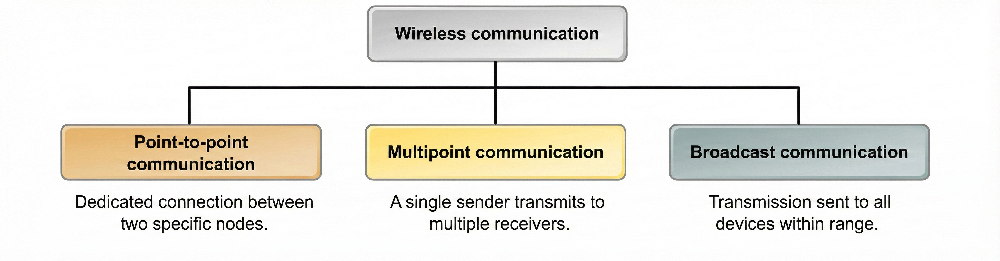
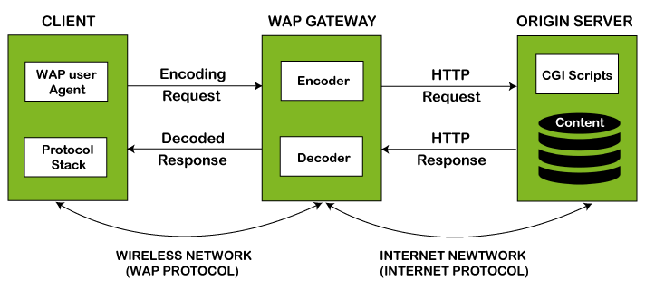

Introduction to Wireless Communication
IN 3510 | Lecture 1 Comprehensive Notes
1. Fundamental Definitions
Wireless Communication
- Transfer of information between two or more points that are not physically connected.
- Uses electromagnetic waves (Radio, Microwave, IR) in open space instead of wires, cables or fiber optics.
- Key Physics: c = f × λ (Speed of light = Frequency × Wavelength).
- c = 3x10^8 m/s
- Higher frequency → Shorter wavelength → More data capacity but more attenuation/interference.
Mobile Computing
- Using a computer while on the move.
- Enabling access to network services anytime, anywhere.
- Involves displaying, collecting, and transferring info from a mobile device to an information system.
2. History
Timeline
1896
Marconi (Wireless Telegraph)
1914
First Voice over Radio
1960s
Satellites Launched
Today
Cellular, Wi-Fi, IoT
3. Types & Importance of Wireless Communication
Wireless Communication Types
Why mobile & wireless communication?
- Anywhere/Anytime Connectivity: The core benefit.
- Infrastructure: Connects areas without pre-existing cables.
- Cost Effective: Often cheaper/easier to setup than laying cables.
- Enable new applications
- Easy to setup
- Enable mobility: Relationship of the wireless industry with globalization.
- Ad-hoc Networks: Instant networking without infrastructure.
Business Evolution
Evolution from simple Web Sites to full Mobility:
- HTML Web Sites: Basic info.
- e-Commerce: Purchasing added.
- e-Business: Added CRM, SCM (Supply Chain).
- m-Business: Mobility + Self-serve + No latency.
4. Wired vs. Wireless
| Feature | Wired Networks | Wireless Networks |
|---|---|---|
| Bandwidth | High | Low |
| Reliability | Low variability (Stable) | High variability (Unstable) |
| Interference | Low | High (Hidden Terminal Problem) |
| Latency | Low | Higher |
| System | High power & high resource machines | Low power & low resource |
| Security | Requires physical access | Requires proximity (Broadcast) |
5. The Electromagnetic Spectrum
| Type | Frequency Range | Usage |
|---|---|---|
| Radio Waves | 3 kHz – 300 GHz | AM/FM Radio, TV |
| Microwaves Sweetspot | 300 MHz – 300 GHz | GSM, 3G, Wi-Fi, Satellite |
| Infrared | 300 GHz – 400 THz | Short range, remote controls (10nm - 1mm) |
6. Applications Matrix
Mobile applications categorize interactions between Consumers (C), Business (B), Government (G), and Employees (E).
B2B
Business ↔ Business
B2C / C2B
Business ↔ Consumer
B2E / E2B
Business ↔ Employee
B2G / G2B
Business ↔ Govt
G2C / C2G
Govt ↔ Citizen
G2E / E2G
Govt ↔ Employee
G2G
Govt ↔ Govt
Key Application Types:
- M-Commerce: Mobile purchasing.
- Positional commerce (p-commerce)
- Voice commerce (v-commerce)
- LBS (Location Based Services): "Positional commerce".
- Telematics: Vehicle communication.
- Wireless Sensor Networks: IoT applications.
- Mobile agent apps :Siri, Google assistant
7. Architecture & WAP
Core Components
-
Mobile Device: Cell phone, PDA, Laptop.
-
Middleware: Bridges OS and Apps (Service discovery, adaptation).
-
Wireless Gateway: Protocol translator (WAP ↔ HTTP). Crucial for legacy systems.
-
Web Server: Hosts content (HTML/XML).
WAP (Legacy Protocol)
Wireless Application Protocol. An early standard to access info on small screens.
- Mobile Browser sends WAP request.
- WAP Gateway intercepts and translates to HTTP.
- Web Server responds with content.
- Gateway converts back to WAP for device.
*Modern phones use full HTML/HTTP directly.
8. The Wireless Landscape

WPAN (Personal Area)
Range: 0-10m (Room/House)
- Bluetooth: 1 Mbps
- RFID/UWB
WLAN (Local Area)
Range: ~100m (Building/Campus)
- Wi-Fi (IEEE 802.11b): 11 Mbps
- 802.11 a/g/n
WMAN (Metro Area)
Range: 5-15km (City)
- WiMAX (802.16): ~70 Mbps
- WLL (Wireless Local Loop): Connects homes to PSTN (Last mile).
WWAN (Wide Area)
Range: 50km+ (National/Global)
- Cellular: GSM (9.6 Kbps), 3G (2 Mbps), 4G/5G.
- Satellite: Motorola Iridium (64 Kbps), GPS.